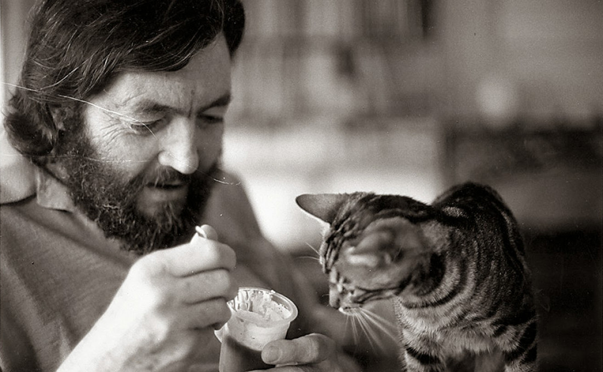

Julio Florencio Cortázar fue un escritor y profesor argentino. También trabajó como traductor, oficio que desempeñó para la Unesco y varias editoriales.
Aquí estásn algunas de sus obras más famosas:

Otras obras de cortazar
- Modelo para armar
- Bestiario
- obra critica
- Pameos y Meopas